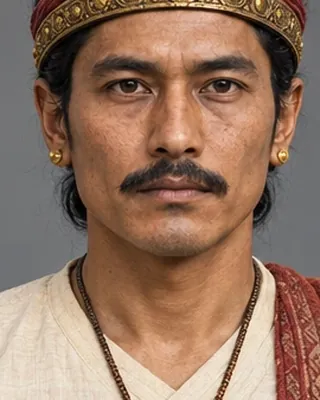

1380–1387
late 14th century (grant of 1392) · Chutia king

Son of Nandi; ruled from Sadhayapura. A later Chutia king names Ratnanarayana, identified with him, as king of Kamatapura, which may show a link between Sadiya and Kamata.
The Ratnanarayana identification is a scholarly suggestion.
Record confidence: medium.